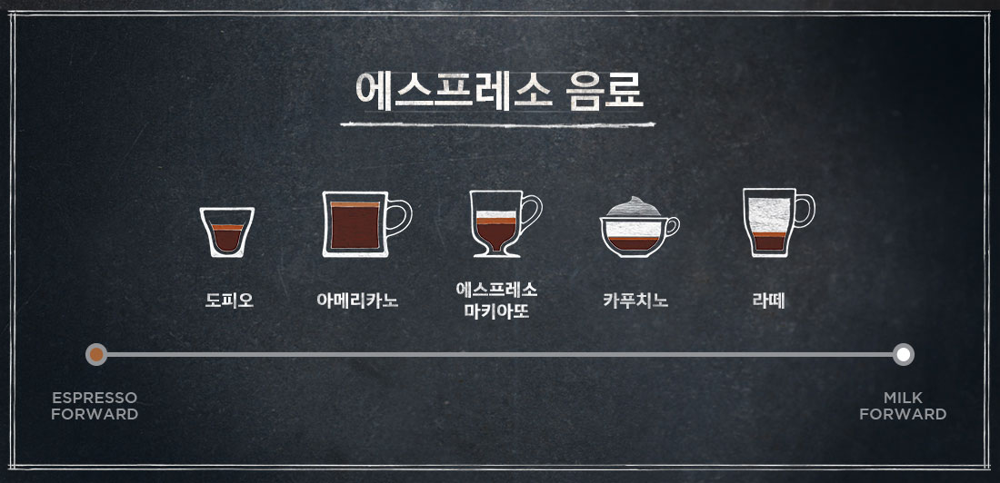

- "오늘날, 스타벅스에 있어 꼼꼼하고 세심한 노력은 다양한 음료 메뉴만큼이나 중요합니다."
-
1983년 하워드 슐츠는 이탈리아 밀라노의 한 커피숍에서 카페라떼를 주문했습니다. 그는 바리스타의 정성 어린 손길로 제조된 에스프레소를 보면서,
자신이 주문한 음료를 만들기 위해서는 바리스타의 커피를 향한 열정과 진심이 가장 중요하다는 것을 느꼈습니다.
또한, 커피를 마시며 느끼는 감동과 여운은 커피 한 잔을 완성하기 위한 공동체의 세심한 노력이 담겨 있다는 것도 깨닫게 되었습니다.오늘날 스타벅스에게 커피를 향한 세심한 노력은 다양한 음료 메뉴만큼 중요합니다. 강렬한 에스프레소 풍미와 도피오 한 잔, 완벽하게 만들어진 크림 블렌드의 라떼 한 잔처럼 모든 커피 한 잔에는 우리의 열정이 담겨있습니다.